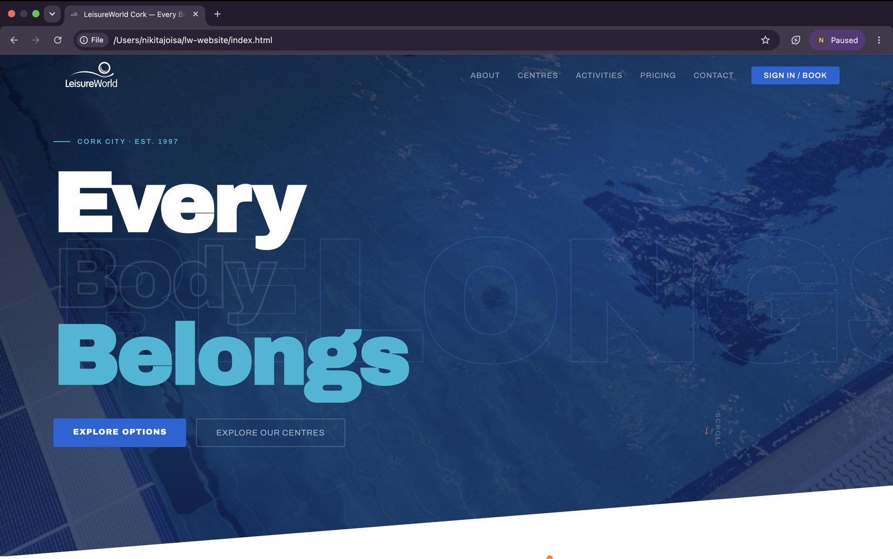
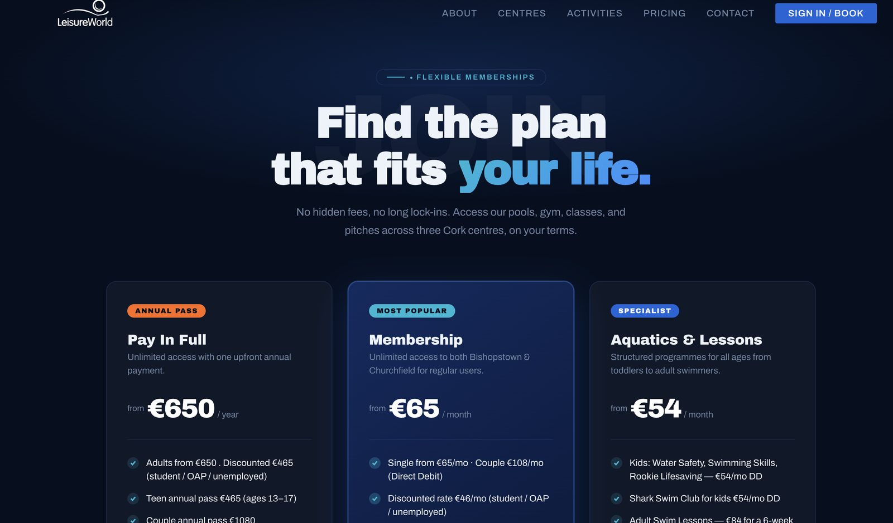
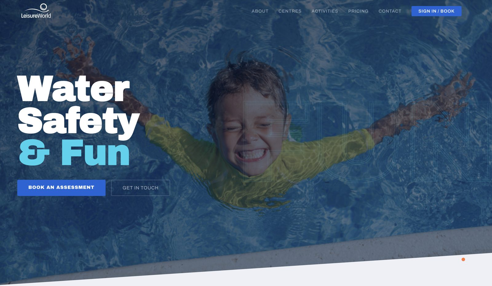
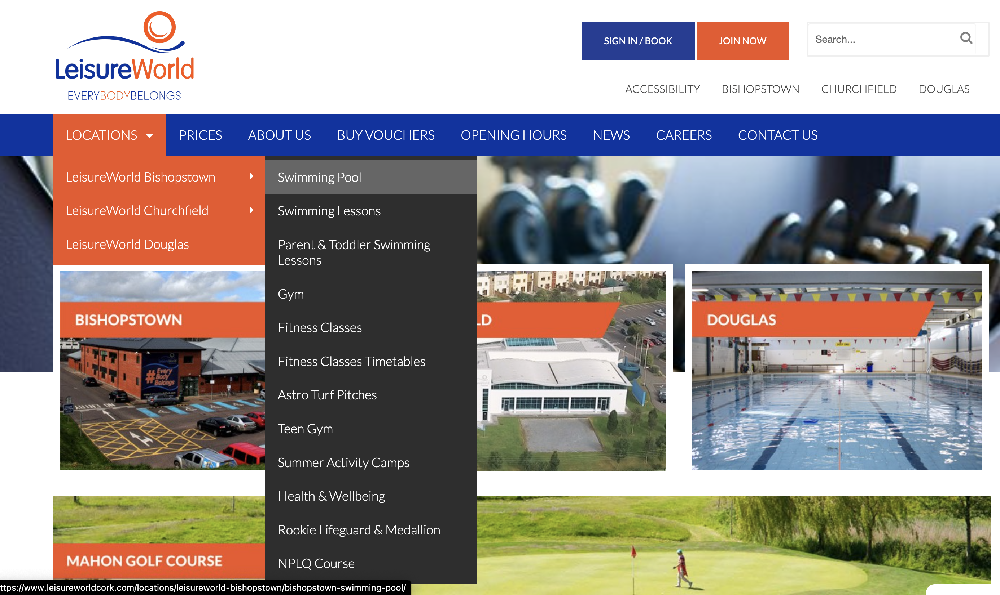

Redesigning LeisureWorld Cork's Digital Experience
TL;DR
LeisureWorld Cork is a health, fitness, and recreation provider operating three centres across Cork. As a self-initiated UI/UX case study, I evaluated the existing website to identify usability issues and user pain points affecting key user journeys.
Using a user-centred design process, I redesigned the experience with improved navigation, information architecture, and accessibility before developing the solution as a fully custom, responsive website using HTML, CSS, JavaScript, PHP, and Bootstrap.
See the GitHub repo →Background
An outdated experience that created unnecessary friction
The existing LeisureWorld Cork website no longer met users' expectations. Its maze-like navigation, cluttered information architecture, and inconsistent content made it difficult for visitors to locate essential information, creating frustration and reducing the overall usability of the site.
Problem
Four key usability issues identified through stakeholder interviews
To understand the existing experience, I conducted interviews with customers, front-line staff, and back-office stakeholders. These conversations revealed four recurring usability issues that affected both users and the organisation.

Maze-like navigation
Users found it difficult to navigate the website and locate key services due to a confusing information architecture.
Disruptive pop-ups
Frequent and unnecessary pop-ups interrupted users' journeys, creating friction and reducing engagement.
Poor visibility of core services
Participants consistently highlighted that the Swim School — LeisureWorld's core service — was difficult to find and lacked clear, comprehensive information.
Duplicate and inconsistent content
Staff explained that similar information existed across multiple pages, making content difficult to maintain and leading to outdated or conflicting information being shown to users.
The redesign had one guiding constraint: improve usability by simplifying navigation and content without removing the information users and staff depend on.
User Patterns
Members & Visitors Task-focused engagement
Users visit the website to quickly find information about memberships, swimming lessons, fitness classes, timetables, or facility bookings. They expect clear navigation and fast access to relevant information.
Parents & Families Information-focused engagement
Parents primarily look for details about the Swim School, children's camps, and birthday parties. They need comprehensive, easy-to-find information, including schedules, pricing, enrolment, and FAQs, to make informed decisions.
Process
From research to a user-centred redesign
Building a shared understanding of users and stakeholders
Stakeholder interviews informed a stakeholder map, personas, empathy maps, and customer journey maps, providing a shared understanding of user needs, business priorities, and key pain points. These insights established a strong foundation for the redesign and ensured design decisions were driven by research rather than assumptions.
Turning research into design priorities
Research insights were synthesised into point-of-view statements and "How Might We" questions to define the key challenges affecting users and staff. This created a clear direction for the redesign and ensured subsequent design decisions addressed the highest-priority issues.
Emotional trend across the journey
Estimated emotion score, -2 to 2, across five journey stages, per persona
Visualisations of estimated frequency and severity highlighted the most recurring pain points, supporting prioritisation before moving into design.
Pain point priority matrix
Frequency versus severity, bubble size is the combined priority score
Scores are estimates from the empathy and journey map synthesis, not measured data.
Prototype & Ideation
Exploring and refining design concepts
I sketched early interface ideas on paper to quickly explore layouts, navigation patterns, and content hierarchy before developing them into digital wireframes. These low-fidelity concepts made it easier to evaluate different approaches, gather stakeholder feedback, and refine the direction before moving into high-fidelity designs.
Internal testing for validation
Validating the redesign with key stakeholders
The prototype was reviewed in iterative sessions with the Project Lead, Operations Manager, Marketing Manager, and CEO. Their feedback helped validate navigation, content structure, and user flows, ensuring the proposed solution aligned with both user needs and organisational goals before development.
"I don't feel like I'm searching anymore, I know where to go."
— CEO, stakeholder review
Final Product
A redesign built around what users actually need
Homepage
User goals became the primary focus, reducing clutter and improving content hierarchy. Each section highlights essential information, guiding users towards key services and actions. The rebuild also creates a consistent experience across the wider site.
Toggle to compareSwim School
Programmes became the primary content structure, replacing one long information-heavy page. Each pathway now has its own dedicated page with clear levels, goals, and progression details. The rebuild improves wayfinding by allowing users to explore the programme most relevant to them without unnecessary scrolling.
Toggle to compareCentre Policies
Policies became organised categories rather than a flat document list. Each card provides essential context before users open a policy, improving scanability and reducing search effort. The rebuild replaces static PDFs with structured, responsive pages that are easier to navigate, read, and maintain.
Toggle to compareDesign system
Built for consistency across pages, clean handoff, and future iteration.
Typefaces
Colours
Impact
Rebuild in progress
The redesign was validated by stakeholders and end users, establishing a clearer information architecture, improved discoverability, and a scalable foundation for the upcoming MVP launch.
I led the project end-to-end, from research and UX strategy through design and development, delivering a production-ready experience shaped by user insights and iterative validation.
Hover cards to explore0/6
Stakeholders approved the redesigned experience and supported moving forward with implementation.
0/5
Reception staff validated the new customer journeys, confirming they were clearer and easier to support.
0
Returning customers tested the redesigned experience, providing positive feedback that informed the final refinements before launch.
0%
Participants preferred the redesigned navigation over the existing website, validating the new information architecture and overall user experience.
Reflections
What this project reinforced
Designing around real user needs, not assumptions
This project reinforced that effective UX extends beyond interfaces. Research with customers, staff, and stakeholders revealed organisational challenges that shaped a clearer, more scalable user experience.
Simplifying without losing important information
The key challenge was balancing simplicity with the volume of information LeisureWorld provides. Rather than removing content, the focus was on restructuring information architecture to help users find what they need more easily.
The importance of validation before launch
Further validation with real customers will be essential before launch. Testing with members, parents, and visitors will help identify remaining friction points and ensure the experience supports real user needs.